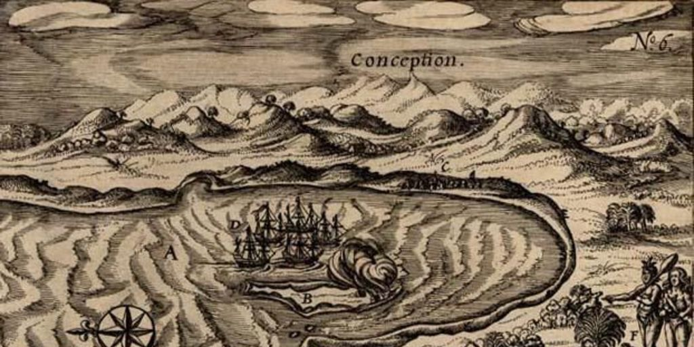
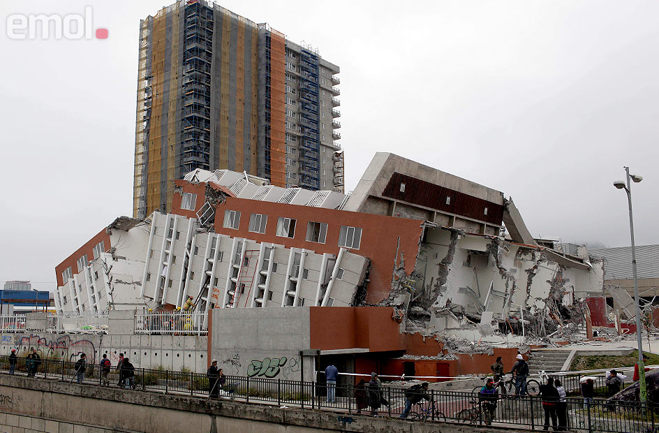
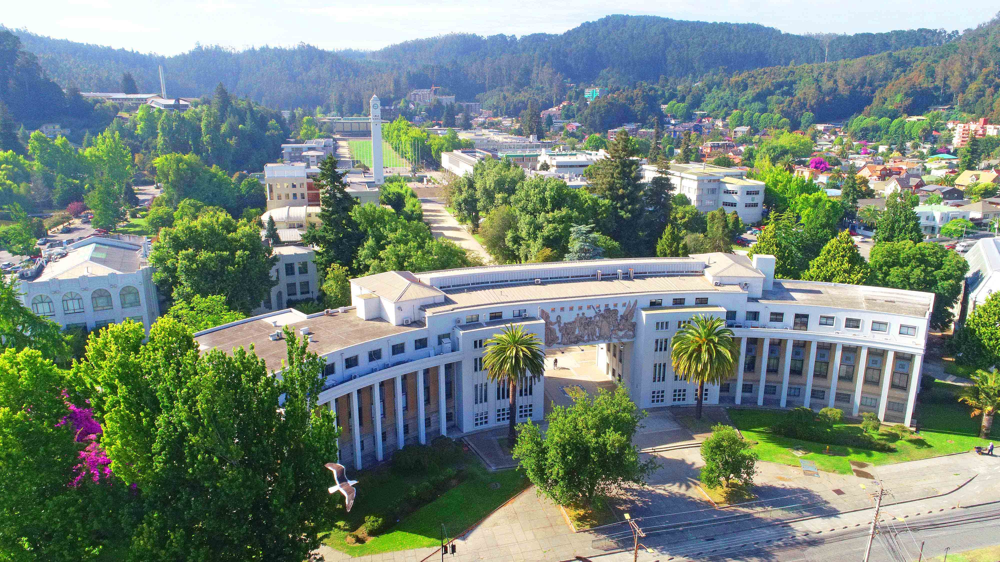

Historical Highlights of Concepción

1550 - Founding
Concepción was founded by Pedro de Valdivia near the Bio-Bio River, playing a key role in colonial Chile.

2010 - Earthquake
One of the strongest earthquakes in history struck Concepción, reshaping the city and its infrastructure.

1919 - University Founded
The University of Concepción became one of the most prestigious institutions in Chile and Latin America.